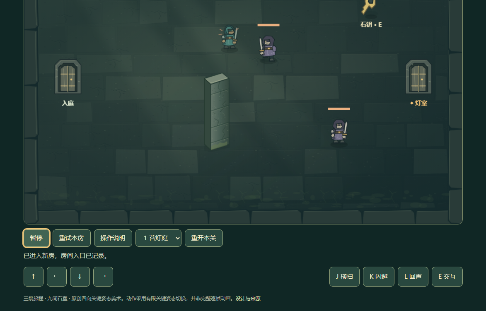
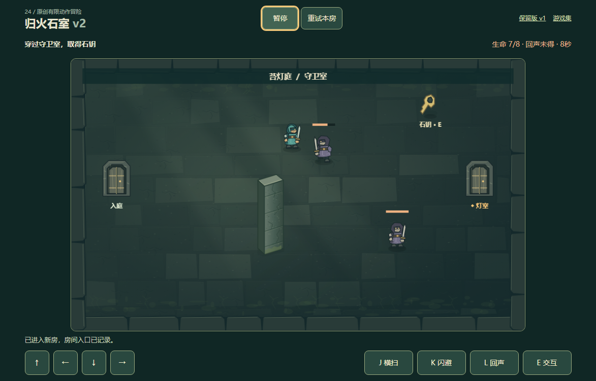

修复已部署至公开网站，5 个视口线上回归通过，118 个限定范围文件与提交一致。运行提交 581c22667f3488c8db18bfe641aa8a19bd566dc8。
打开游戏 · Pages 成功记录 · 线上操作报告 · 文件核对 · 本地阶段原始档案
完整实际页面截图，点击查看原图；独立短时场景，不声称逐帧同一战局。


通过正常操作进入第一守卫房；在 5 个窗口移动/攻击/暂停/继续，执行 1 次检查点重试，并检查旧版入口。回声未解锁，仅验证按钮可达。
自动化短流程，不代表真人、移动端、三关完整通关、Safari 或整体质量验收。完整原图和 JSON 均保留；未合成游戏画面。